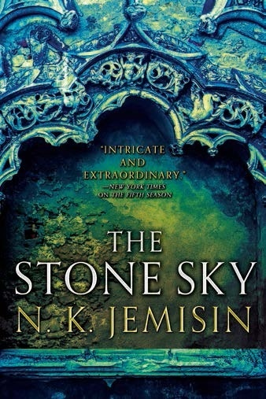

The Stone Sky
⭐️⭐️⭐️
Format: audio (14 hours 16 minutes)
This was an enjoyable conclusion to the trilogy. Overall, it was an interesting world and magic systems that the author built. The motives of the various characters were easy to understand, and relate to. Given some of the complexities of the vying factions and different people, I'm sure this could have been much longer - that may have helped develop some of the minor characters. I still really enjoyed the different perspectives and (at times) second-person narration, the latter of which was actually explained at the end of this book.
- Previously: Peter and the Starcatchers
- Next: John Adams